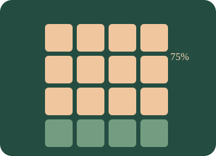

Numbers III
Connect ratios, fractions and percentages. Explore ratio sharing, map scales, equivalent fractions, decimals, percentages, discounts and rational-number operations.

What will you learn?
- Share in ratios and use map scales with consistent units.
- Convert fractions, decimals and percentages; form equivalent fractions.
- Calculate percentage increases and discounts.
- Apply the four operations and BIDMAS in positive rational numbers.
Build the idea, one step at a time.
A fraction compares a part with a specified whole, and its denominator tells you how that whole is divided into equal parts. A decimal is another way to express a number; a percentage means per hundred. A ratio compares quantities and needs its order and total parts interpreted carefully.
Equivalent fractions multiply numerator and denominator by the same nonzero factor. For addition, use equal-sized parts through a common denominator; multiplication has a different rule. A percentage increase or discount is measured from a stated original amount, not from the new amount. A map scale compares lengths in the same units, not areas by the same scale factor.
01 · Share a total in a ratio
Treat a ratio as equal-sized parts; compare two-part and three-part sharing.
Use two shares first. The numbers in a ratio count equal-sized parts, not the actual amounts of money.
Add all the ratio parts before dividing the total. The shares £10, £15 add back to £25.
5 parts · £5 per part
02 · Use a map scale to plan a journey
Keep map distance and real distance in the same units before converting.
Write a unit beside every number. 100 cm = 1 m; 1000 m = 1 km; therefore 100,000 cm = 1 km.
A scale of 1 : n means one map unit represents n of the same units in real life. The diagram illustrates the measurement; its centimetres are not the physical size of your screen.
4 cm → 1,000 m = 1 km
03 · Fractions, decimals and percentages are the same value
Connect equivalent representations and make equivalent fractions by scaling both parts.
Begin with halves, quarters, fifths and tenths. A percentage is a number of hundredths.
Multiplying numerator and denominator by 2 gives 6/8. The size of the fraction stays the same; the pieces get smaller while their count increases.
3/4 = 0.75 = 75%
04 · Operate on rational numbers
Use common denominators for addition/subtraction and inverses for division.
For addition/subtraction, make equal-sized pieces first. For multiplication, common denominators are not needed.
The result is a positive rational number. Simplify with the HCF of numerator and denominator. The inputs here are never zero, so reciprocals are defined.
3/4 + 1/3 = 13/12
05 · Increase a price or apply a discount
Find the change and then the new total; distinguish a change from the final price.
Use 10%, 5% and 1% as building blocks. Write both “change” and “new price” on your working.
Subtract the discount from the original price. The discount amount and the sale price answer different questions.
Change: £20.00 · new price: £60.00
06 · BIDMAS with positive rational numbers
Apply operation priority to fractions, powers and brackets, keeping exact values.
First identify the next operation; then use the fraction method for just that operation.
The BIDMAS rules are unchanged by fractions or decimals. Choose a pair with and without brackets and compare the results.
1/2 + 3/4 × 2 = 2
You can read these explanations without operating the simulator. The practical activities, games and revision below let you apply the ideas and check your reasoning.
Now investigate →Predict. Change. Explain.
Work on paper first, then use the controls and worked examples to check your reasoning.
These activities are practice; use the revision simulator for a test.
Connect the ideas and investigate
Use the explanations and worked examples above, then test a prediction with these models. The diagrams illustrate mathematical relationships; they are not tools for measuring the physical size of your screen.
Choose “A little support” for method hints, or “Go further” for extensions. Your working notes and checks on this page are not sent to the teacher.
Try it. Solve it. Play again.
Fraction Café and Pizza Proportions: move cards, build a model and use feedback to work out the next step.
Ready to test your understanding?
Explore 60 questions for Numbers III. Select one or more areas and question levels. Practise with explanations or take a Test yourself quiz, then retry the questions you missed.